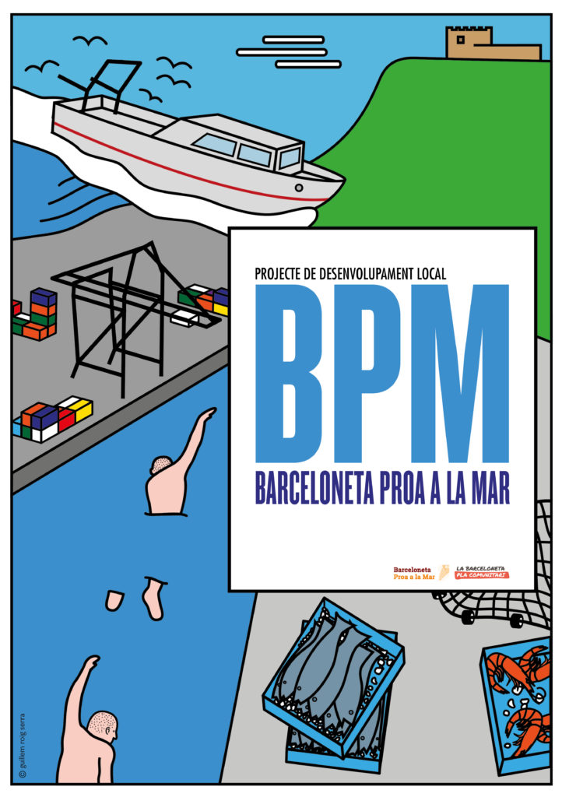
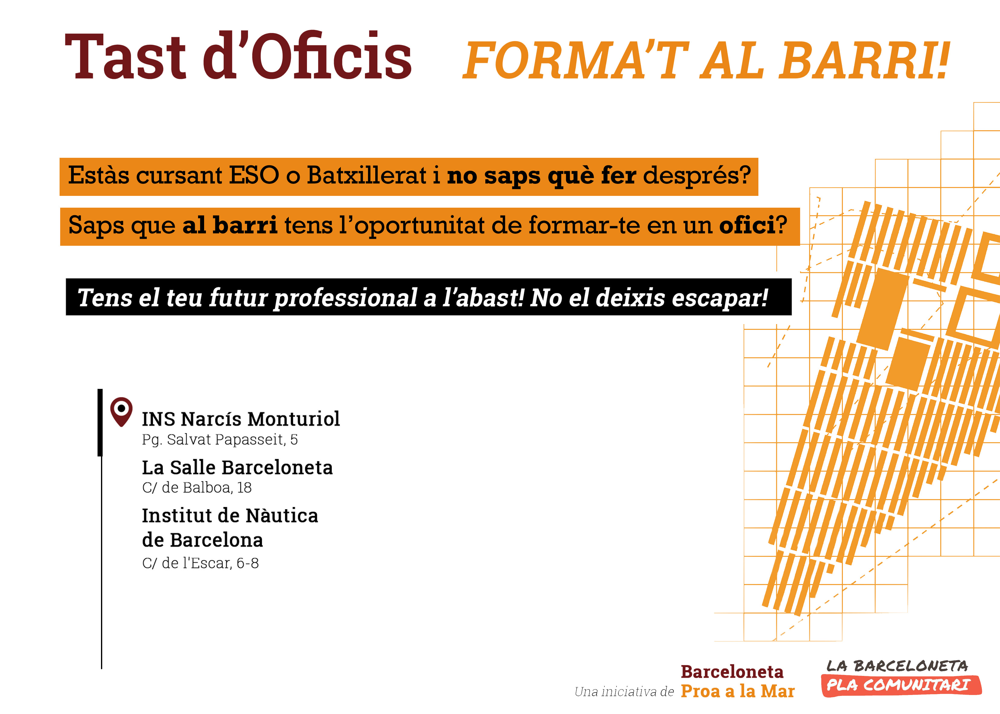

Barceloneta Proa a la Mar (BPM) és un projecte comunitari
innovador de la Barceloneta que neix el 2013 com una iniciativa veïnal i que està
orientada
al
desenvolupament local del barri al voltant de tres eixos:
la formació
l’ocupació
l’economia local sota paràmetres de l’economia social i solidària
Com a eixos transversals del projecte tenim la sostenibilitat i la
maritimitat.
El projecte vol implicar tots els agents del teixit socioeconòmic del territori (veïnat,
associacions i entitats, centres educatius, equipaments i serveis municipals, empreses i
administració) amb l’objectiu final de donar respostes col·lectives a problemàtiques
com l’atur, l’elevat percentatge d’abandonament escolar, l’empobriment de moltes famílies de
la Barceloneta i a la pressió que el model de ciutat exerceix sobre el barri. Mitjançant
respostes a aquestes necessitats més immediates, però també articulant estratègies i
actuacions comunes a mitjà i llarg termini .
BPM té quatre grans objectius estratègics:
la dinamització de l’economia local i la millora de l’oportunitat d’inserció de les
persones aturades
El Tast d'Oficis de la Barceloneta és un recurs educatiu d'iniciativa comunitària dirigit a alumnes de
4t d'ESO de la Barceloneta que, mitjançant tot un seguit de sessions teòriques i pràctiques, té la
finalitat de donar a conèixer i posar en valor les possibilitats formatives i oportunitats ocupacionals
que ofereix el territori, així com el seu encaix entre ambdues, fomentant d'aquesta manera la formació
professional de qualitat entre els joves del barri, tot acompanyant-los en la transició escola-treball.

Objectiu
El Tast d'Oficis pretén donar a conèixer a l'alumnat de 4t d'ESO de la Barceloneta l'àmplia formació
professional ofertada al barri, una oferta de gran valor afegit, per tal d'animar-los a que continuïn
formant-se més enllà dels estudis obligatoris en sectors professionals de futur.
En aquest sentit, el Tast d'Oficis de la Barceloneta pretén:
Promoure l’oferta educativa postobligatòria del barri.
Apropar els joves i les seves famílies als centres educatius de la Barceloneta per conèixer els
cicles
formatius que s’hi imparteixen.
Reduir el percentatge d’abandonament escolar dels joves del barri de la Barceloneta.
Esdevenir una proposta complementària d’acompanyament i orientació formativa dels alumnes de la
Barceloneta, en total coordinació amb els centres educatius del barri.
Potenciar la formació professional i posar-la en valor.
Millorar l'ocupabilitat dels joves de la Barceloneta.
Difondre el Mapa dels Perfils Professionals de la Barceloneta per donar a conèixer les
necessitats,
demandes i oportunitats laborals del territori, així com els sectors professionals de l’entorn
potencialment generadors d’ocupació.
Que tots els centres educatius del barri comparteixin uns objectius comuns i tinguin una mirada
comunitària entorn l'educació.
Contingut i àmbits d’intervenció
Mòdul 1: Ocupació i territori
Sessió 1: Mapa de perfils professionals de la Barceloneta
Sessió 2: Visita als diferents centres de formació professional del barri
Mòdul 2: Descobrint altres formes d’ocupar-se: la mirada comunitària
Sessió 1: L’Economia social i solidària
Sessió 2: Visita a diferents iniciatives d’emprenedoria comunitària de la
Barceloneta
Projecció del vídeo Tast d'Oficis de la Barceloneta: Vídeo d'edició pròpia (PDC) que
mostra
els
diferents graus i sortides laborals que oferten els centres de formació professional de la
Barceloneta
presentat per alumnes que actualment estan cursant els graus. Els alumnes expliquen per què van
triar
aquest cicle i per què el recomanarien a futurs alumnes. L'objectiu d'aquest vídeo és fer la
sessió
teòrica més visual, dinàmica, atractiva i propera de cara els alumnes.
Presentació del Mapa de Perfils Professionals de la Barceloneta (edició pròpia):
El Mapa de
Perfils
Professionals de la Barceloneta és fruit de la diagnosi realitzada per la Comissió de Formació
de
Barceloneta Proa a la Mar.
Aquest mapa de format digital permet visualitzar els diferents
jaciments
ocupacionals detectats al territori (litoral, port de mercaderies, port olímpic, nova bocana,
centre
urbà del barri...) de diversos àmbits professionals com són el manteniment d'embarcacions, la
marineria,
la logística, l'esport nàutic, l'educació mediambiental, l'educació en el lleure, el comerç, els
serveis, la restauració, etc.
Alhora el mapa proporciona altres informacions rellevants com on
et pots
formar o quines competències requereixen els diferents perfils professionals demandants.
L'objectiu
d'aquest mapa és mostrar als alumnes l'encaix entre l'oferta formativa del barri i les
oportunitats
laborals del territori per tal de visibilitzar i posar en valor el futur laboral al barri de la
Barceloneta.
Confluència d'iniciatives socials mediambientals vinculades al
mar
L’Espai Mediterrani és un punt de trobada entre entitats i associacions que realitzen accions vinculades
al
medi marí a Barcelona. És un punt de confluència d’iniciatives que té per objectiu generar sinergies i
alinear estratègies per a la cura dels mars i oceans.
La governança i l’estructura organitzativa de Barceloneta Proa a la Mar/PIOL és la
següent:
Espai
integrat per entitats veïnals del barri,
centres educatius, equipaments municipals i l’equip de treballadores
comunitàries, on es consensuen els objectius estratègics i les línies de treball
del projecte.
Espai de treball format per veïnat del barri i la
treballadora comunitària que dinamitza el PIOL. En aquesta taula es treballa
tots els aspectes relacionats amb l’ocupació i la formació ocupacional del
projecte.
Vídeo
En aquest vídeo podeu veure una explicació detallada del projecte a partir del minut
1:30.